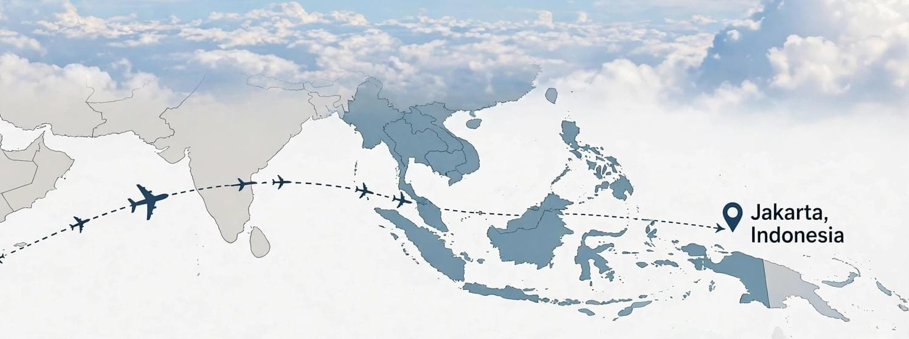

إرسال الطرود من إندونيسيا إلى المملكة العربية السعودية: الشروط والتكاليف وطريقة الشحن

هل ترغب في إرسال طرد من إندونيسيا إلى المملكة العربية السعودية؟ سواء كنت تريد إرسال الملابس أو الهدايا أو الأغراض الشخصية إلى عائلتك وأصدقائك، فمن المهم معرفة إجراءات الشحن الدولي قبل تسليم الطرد إلى شركة النقل.
يزداد الاهتمام بالشحن بين إندونيسيا والسعودية بسبب الروابط العائلية والتجارية والسفر والعمل والدراسة بين البلدين. لذلك يحتاج المرسل إلى معرفة كيفية تجهيز الطرد، والمعلومات المطلوبة، والقواعد الجمركية في بلد الوصول.
في هذا الدليل، نستعرض أهم الخطوات والنصائح لإرسال الطرود من إندونيسيا إلى السعودية بطريقة منظمة، مع الإشارة إلى المصادر الرسمية المتعلقة بالشحن الدولي والجمارك السعودية.
1. هل يمكن إرسال الطرود من إندونيسيا إلى السعودية؟
يمكن نقل الطرود بين إندونيسيا والسعودية عبر خدمات الشحن الدولي وشركات النقل التي تقبل الوجهة المطلوبة.
تقدم Lion Parcel معلومات عن خدمات الشحن الدولي إلى أكثر من 50 دولة حول العالم. ومع ذلك، ينبغي التأكد مباشرة من الشركة أو الوكيل بشأن قبول الشحنات إلى المملكة العربية السعودية، لأن الوجهات المتاحة قد تختلف حسب نوع الخدمة والمنتج.
قبل إرسال الطرد، جهّز المعلومات التالية:
- مدينة الإرسال داخل إندونيسيا.
- مدينة الاستلام في السعودية، مثل الرياض أو جدة أو مكة أو المدينة المنورة.
- الوزن الفعلي للطرد.
- أبعاد الصندوق أو العبوة.
- نوع البضائع الموجودة داخل الطرد.
- القيمة الحقيقية للمحتويات.
2. ما هي خطوات إرسال الطرد إلى السعودية؟
لتسهيل عملية الشحن، يُنصح باتباع الخطوات التالية:
أولاً: تحديد محتويات الطرد
اكتب وصفاً واضحاً لكل منتج داخل الطرد، مع تحديد الكمية والقيمة التقريبية. يجب أن تكون المعلومات مطابقة للمحتويات الفعلية، لأن البيانات غير الصحيحة قد تسبب تأخيراً في إجراءات الجمارك.
ثانياً: قياس الوزن والأبعاد
يتم حساب تكلفة الشحن الدولي وفقاً لشروط شركة النقل، وقد يعتمد الحساب على الوزن الفعلي أو الوزن الحجمي، أيهما أعلى.
توضح Lion Parcel أن معادلة حساب الوزن الحجمي للشحن الدولي هي:
الأبعاد بالسنتيمتر والنتيجة بالكيلوغرام.
كما توضح الشركة أن وزن الشحن الدولي الذي يزيد على 1 كجم قد يخضع لقواعد التقريب الخاصة بها. يجب مراجعة الشروط السارية عند الحجز.
ثالثاً: تجهيز التغليف
استخدم صندوقاً قوياً يتناسب مع طبيعة المحتويات. ويمكن إضافة مواد الحماية مثل الفقاعات الهوائية أو مواد التبطين لمنع تحرك المنتجات داخل الصندوق أثناء النقل.
رابعاً: كتابة بيانات المستلم
تأكد من كتابة الاسم الكامل للمستلم ورقم الهاتف والعنوان التفصيلي والمدينة والرمز البريدي إن وجد.
خامساً: التأكد من المستندات وإجراءات الجمارك
قد تطلب شركة الشحن فاتورة تجارية أو قائمة تعبئة أو مستندات أخرى وفقاً لنوع البضائع ومتطلبات بلد الوصول.
3. ما هي الوثائق المطلوبة للشحن إلى السعودية؟
تختلف المستندات المطلوبة بحسب طبيعة الشحنة وما إذا كانت شخصية أو تجارية. ومن المستندات التي قد تكون مطلوبة:
- الفاتورة التجارية: توضح وصف البضائع وقيمتها وكميتها، خصوصاً للشحنات التجارية.
- قائمة التعبئة: توضح محتويات الطرد وعدد القطع وطريقة التعبئة عند الحاجة.
- بيانات المرسل والمستلم: الاسم والعنوان ورقم الهاتف.
- مستندات إضافية: قد تطلبها الجهات المختصة حسب نوع المنتج.
- شهادة المنشأ: قد تكون مطلوبة لبعض الشحنات التجارية وفقاً للأنظمة المعمول بها.
وفقاً لإرشادات هيئة الزكاة والضريبة والجمارك السعودية (ZATCA)، تشمل المستندات الأساسية للاستيراد التجاري الفاتورة التجارية وبوليصة الشحن، وقد تكون شهادة المنشأ مطلوبة حسب الحالة.
4. ما هي البضائع التي يجب التأكد من السماح بشحنها؟
لا يمكن إرسال جميع أنواع المنتجات عبر الشحن الدولي. فبعض المواد ممنوعة، بينما تحتاج منتجات أخرى إلى تصاريح أو موافقات خاصة.
وتشير إرشادات Lion Parcel للشحن الدولي إلى وجود قيود على فئات من المنتجات، منها:
- الأسلحة ونسخ الأسلحة.
- الحيوانات الحية.
- السجائر والسجائر الإلكترونية.
- اللحوم والخضروات والفواكه الطازجة.
- المشروبات الكحولية.
- المواد الخطرة.
- المخدرات والمواد المحظورة.
- بعض المجوهرات والمستندات الثمينة والمواد المخالفة للقوانين.
هذه قائمة إرشادية وليست قائمة كاملة بجميع القيود السعودية. يجب التأكد من شروط شركة النقل واللوائح السعودية الخاصة بالمنتج قبل إرساله.
5. الإجراءات الجمركية عند وصول الطرد إلى السعودية
تخضع الطرود القادمة إلى المملكة العربية السعودية للإجراءات الجمركية المعمول بها.
قد تطلب الجمارك معلومات إضافية عن محتويات الشحنة أو قيمتها أو هوية المستلم، كما يمكن إخضاع الطرد للفحص وفقاً للإجراءات المعتمدة.
ومن المهم معرفة ما يلي:
- يجب تقديم وصف صحيح لمحتويات الطرد.
- قد تخضع بعض المنتجات لرسوم جمركية أو ضرائب.
- قد تحتاج المنتجات المقيدة إلى تصاريح من الجهات المختصة.
- قد يتم تأخير الطرد إذا كانت المستندات غير مكتملة.
- قد يتم رفض أو إعادة أو مصادرة بعض المنتجات المخالفة للأنظمة.
لا يمكن تحديد الرسوم الجمركية لجميع الطرود بنسبة ثابتة، لأنها تعتمد على نوع المنتج وقيمته وتصنيفه واللوائح المطبقة عند الاستيراد.
6. كم تبلغ تكلفة الشحن من إندونيسيا إلى السعودية؟
تختلف تكلفة الشحن الدولي حسب مدينة الإرسال والاستلام ووزن الطرد وأبعاده ونوع الخدمة وشروط شركة النقل.
لذلك لا يُنصح بالاعتماد على سعر تقريبي غير مؤكد قبل معرفة تفاصيل الشحنة.
للحصول على تقدير مناسب، جهّز المعلومات التالية:
- مدينة الإرسال في إندونيسيا.
- مدينة الوصول في المملكة العربية السعودية.
- وزن الطرد بالكيلوغرام.
- طول الصندوق وعرضه وارتفاعه.
- نوع المحتويات وقيمتها.
بعد توفير هذه البيانات، يمكن الاستفسار من شركة الشحن عن إمكانية قبول الطرد والتكلفة والمدة المتوقعة.
7. كم تستغرق مدة الشحن إلى السعودية؟
تعتمد مدة وصول الطرد على شركة النقل والمسار المستخدم وإجراءات التصدير والاستيراد والتخليص الجمركي.
وقد تتأثر المدة أيضاً بالعطلات الرسمية والظروف التشغيلية ومتطلبات الفحص الإضافي.
لذلك يُفضل طلب تقدير زمني من شركة الشحن قبل إرسال الطرد، وعدم اعتبار أي مدة عامة ضماناً لوصول الشحنة في تاريخ محدد.
8. نصائح مهمة قبل إرسال الطرد من إندونيسيا
- تأكد من أن المنتج مسموح بإرساله واستيراده في السعودية.
- اكتب القيمة الحقيقية للمحتويات ولا تقلل القيمة بهدف تجنب الرسوم.
- استخدم صندوقاً مناسباً ومواد حماية جيدة.
- تأكد من صحة عنوان المستلم ورقم هاتفه.
- احتفظ بإيصال الشحن ورقم التتبع.
- اسأل عن الرسوم الجمركية والضرائب المحتملة قبل الإرسال.
- تحقق من إمكانية قبول الوجهة ونوع المنتج لدى شركة الشحن.
هل تحتاج إلى معلومات عن الشحن من إندونيسيا؟
يمكنك الاستفسار عن خدمات الشحن الدولي وإمكانية إرسال الطرود من خلال Lion Parcel Bandung POS101.
التواصل عبر واتسابيرجى تأكيد توفر وجهة السعودية ونوع الشحنة قبل الحجز.
9. الأسئلة الشائعة حول الشحن من إندونيسيا إلى السعودية
هل يمكن إرسال الملابس من إندونيسيا إلى السعودية؟
يمكن أن تكون الملابس من البضائع القابلة للشحن، بشرط قبولها من شركة النقل واستيفاء متطلبات الاستيراد في السعودية.
هل يمكن إرسال الهدايا إلى أفراد العائلة في السعودية؟
يمكن إرسال الهدايا الشخصية إذا كانت محتوياتها مسموحاً بها وتتوفر بيانات الشحنة المطلوبة. وقد تخضع الهدايا أيضاً للإجراءات والرسوم الجمركية بحسب الحالة.
هل يجب دفع الجمارك عند وصول الطرد؟
قد تفرض السلطات السعودية رسوماً جمركية أو ضرائب وفقاً لنوع البضاعة وقيمتها وتصنيفها. ويتحمل المستلم أو الطرف المحدد في شروط الشحن التكاليف المستحقة وفقاً للاتفاق والإجراءات المعمول بها.
هل يمكن تتبع الطرد بعد إرساله؟
يعتمد ذلك على خدمة الشحن المستخدمة. إذا كانت الخدمة توفر رقم تتبع، فيمكن استخدامه لمتابعة حالة الشحنة من خلال نظام التتبع الخاص بشركة النقل.
هل يمكن إرسال جميع أنواع المنتجات إلى مكة والمدينة والرياض؟
لا. قبول الشحنة يعتمد على نوع المنتج وشروط النقل واللوائح السعودية، كما يجب التأكد من توفر الخدمة للمدينة المطلوبة.
الخلاصة
يتطلب إرسال الطرود من إندونيسيا إلى المملكة العربية السعودية معرفة شروط الشحن الدولي وتجهيز المستندات والتغليف المناسب والالتزام بالأنظمة الجمركية.
قبل إرسال أي طرد، تأكد من قبول الوجهة والمنتج لدى شركة النقل، واسأل عن السعر والمدة المتوقعة والرسوم الإضافية المحتملة.
إن تجهيز المعلومات الصحيحة منذ البداية يساعد على تقليل المشكلات والتأخيرات أثناء عملية الشحن.
المصادر والمراجع الرسمية
تم إعداد هذا المقال بالاستناد إلى المعلومات الإرشادية المنشورة من الجهات والشركات التالية:
-
Lion Parcel Indonesia
معلومات خدمات الشحن الدولي ومتطلبات التغليف والوزن الحجمي والمواد المحظورة.
الموقع الرسمي للشحن الدولي -
هيئة الزكاة والضريبة والجمارك السعودية (ZATCA)
إجراءات تخليص الطرود البريدية الواردة.
دليل تخليص الطرود البريدية -
هيئة الزكاة والضريبة والجمارك السعودية (ZATCA)
إرشادات الاستيراد والوثائق المطلوبة.
إرشادات الاستيراد الرسمية -
هيئة الزكاة والضريبة والجمارك السعودية
نظام الجمارك الموحد لدول مجلس التعاون الخليجي.
الاطلاع على النظام الجمركي
إخلاء المسؤولية: هذا المقال لأغراض المعلومات والتوعية العامة، ولا يمثل عرض سعر أو تأكيداً لتوفر خدمة الشحن إلى السعودية. قد تتغير شروط الشحن والرسوم والإجراءات الجمركية، لذلك يُنصح بالتحقق من الجهات المختصة وشركة النقل قبل إرسال الطرد.
تاريخ إعداد المقال: 6 نوفمبر 2026.